WordPress Instalación
-
Conexión MySQL
Nos conectaremos en mysql para crear la base de datos donde se guardará el contenido de WordPress.
mysql -u root -p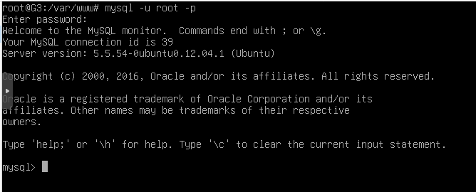 -
Creación BD
Crearemos la base de datos, en este caso “wordpress”.
CREATE DATABASE wordpress;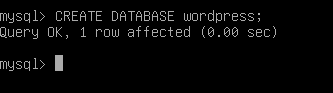 -
Creación usuario
Crearemos un usuario con su contraseña para acceder a la base de datos creada en el paso anterior.
CREATE USER userbd@localhost IDENTIFIED BY 'userbd';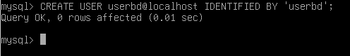 -
Acceso BD
Le daremos acceso al usuario a la base de datos y después, para que mysql sepa que hemos realizado cambios sobre los privilegios, haremos un “FLUSH PRIVILEGES”.
GRANT ALL PRIVILEGES ON wordpress.* TO userbd@localhost;
FLUSH PRIVILEGES;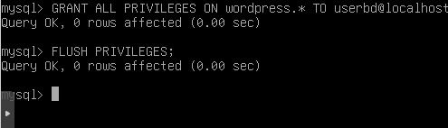 -
Descarga archivos WordPress
Descargaremos los archivos de WordPress de la página web oficial.
wget https://es.wordpress.org/wordpress-4.8.2-es_ES.tar.gz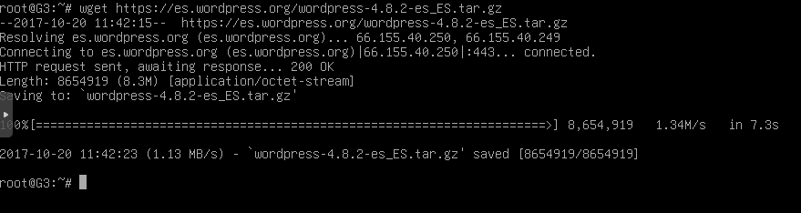 -
Extracción archivos
Extraeremos los archivos.
tar xzvf wordpress-4.8.2-es_ES.tar.gz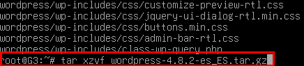 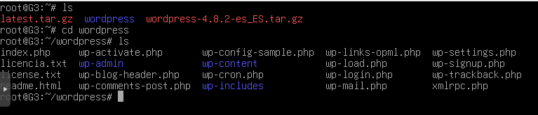 -
Instalación paquetes
Instalaremos los paquetes “php5-gd” y “libssh2-php” para poder trabajar con imágenes, plugins y SSH.
apt-get install php5-gd libssh2-php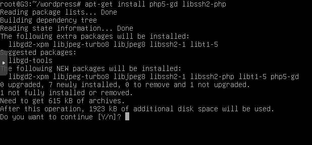 -
Copia del archivo de configuración
Copiaremos el archivo de configuración de ejemplo “wp-config-sample.php” a la localización del archivo de configuración por defecto “wp-config.php” para que WordPress lo reconozca.
cp -wp-config-sample.php wp-config.php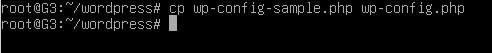 -
Modificación archivo
Cambiaremos el archivo del paso anterior “wp-config.php” para que WordPress se pueda conectar a la base de datos creada.
nano wp-config.php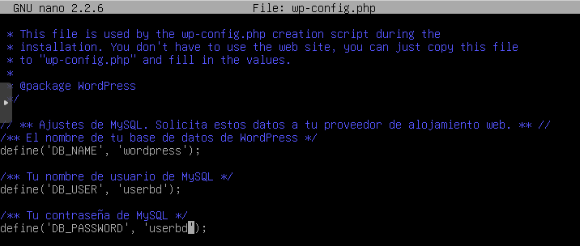 -
Copia de archivos
Copiaremos los archivos de WordPress a la raíz de documentos de nuestro servidor web “/var/www/html”.
cp -r ~/wordpress/* /var/www/html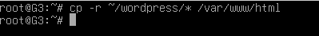 -
Asignar permisos
Le damos permisos en todo el directorio para poder subir imágenes, etc.
chown -R www-data:www-data *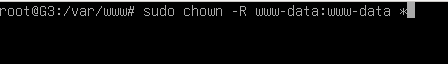 -
Creación directorio uploads
Crearemos manualmente el directorio de uploads (Este será el repositorio padre de nuestro contenido).
mkdir /var/www/html/wp-content/uploads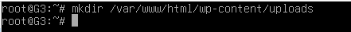